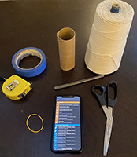

DISCLAIMER - You will be using your phone to take data, and this can sometimes lead to accidents. Please use due care in handling your phone during this experiment.
In this experiment you will be using your phone to measure the acceleration in the x, y, and z axes without gravity. You will build an apparatus and take data. Include a picture of your setup if you can!
While you may be able to achieve a pendulum without them, we recommend using the additional materials as well. This guide will assume that you have them.

Find the cardboard tube from a toilet paper roll and flatten it.
Mark the width of your phone on both sides of the flattened tube.
Make a cut, approximately 4 mm deep, at each mark you made with your phone. Cut from one mark to the other, along the length of the roll, to complete the cutout. Do this on both sides.


Note: I added tape after the second photo to ensure that everything would stay in place.
A period is the time it takes for one cycle in a repeating event or the time for which the event repeats itself.
A pendulum at rest is considered to be in equilibrium. Once the pendulum is displaced, it oscillates about the equilibrium position. The duration of time from the position of displacement after it is released and back to that position is the period of the pendulum.
You should have determined by now how you will be turning your phone into a pendulum.
Typically, when measuring the period of the pendulum, you would measure the angular position as a function of time. Then from those data you would calculate the period of the pendulum.
(very rough) Did you know that the clock was invented after the discovery of Simple Harmonic Motion? Simple Harmonic Motion also is how musicians keep time with one another.
Exercise 1
In order to accurately measure the length of your pendulum, we will need to figure a method for determining that.
If you have a measuring tape, use one end at the point of the pivot and then measure straight downward to the center of mass of your phone.
If you do not have a measuring tape but have a ruler, cut a piece of string that you will dangle from the surface of the pivot to your phone in a straight downward line.
You are free to use either of those methods. However, if you have access to neither of those methods, or another method of your choosing, then we will have to use trigonometry to solve this problem.
First, we suggest that you keep your string lengths perpendicular to the floor, i.e. from the front view, you do not want them flaring out or in, but rather straight up. This will make things a little easier. Secondly, you will need to calculate two projections of the length in order to use the Pythagorean theorem to determine the effective length of your pendulum.
Please note; if you are using a measuring device of some kind make sure the resolution of the measurement is appropriate.
Measure the length of your pendulum in meters.

Exercise 2
In this exercise you will use Phyphox to collect acceleration data from you phone while it is swinging.
| Mass [kg] | Length [m] | Period [s] |
|---|---|---|
| - | - | - |

"Good" data is hard to define. You might just try taking a couple runs to see what type of data comes out. You should however be able to make some predictions about what good data should look like. Recall that should look like while should look like . Thus you should hope to see things like has half roughly the period of . You should notice that oscillates about while is almost entirely positive. Your final axis shouldn't have much on it). It is unlikely that you will get perfect data (i.e. exact cosine and sine squared functions), but should see these sort of trends.
Pay attention to the vertical axis scaling on your three plots. They won't all be the same so you shouldn't directly compare your three graphs to each other without first rescaling or noting the difference in scales.
Exercise 3
Question 1
Some Question here about their plot or data collected
a) What is the period?
b) What is g?
-Does the period significantly depend on the length? Why? Justify your answer.
Exercise 4
In this exercise you will be submitting your data in a Google form that will be collected into one larger dataset with all the students in your class. You will then begin to analyze how the period of the pendulum is related to its length.
| Google Form |
|---|
| Link To Form |
Wait until your TA gives you to okay to proceed. You'll need enough data collected to make a usable set of data.
Exercise 5
Question 2
Even though you only took data for one initial angular displacement and one mass, answer the following questions (based on your intuition?)
Does the period significantly depend on the mass? Why? Justify your answer.
Based on the average of one period, what is g?
::: Exercise
Describe the experiment you will be performing next week.
Briefly state how the acceleration you will measure will be related to the period of the pendulum.
Summarize how using your phone as the bob affects your pendulum. :::